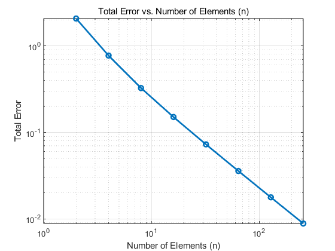

clc;
clear;
close all;
n_values = 2.^(1:8);
total_errors = zeros(size(n_values));
for idx = 1:numel(n_values)
n = n_values(idx);
m = n;
v1=[0,0];
v2=[1,0];
v3=[1,1];
v4=[0,1];
[v4e, c4v] = triangle2dmesh_domain(m, n, v1, v2, v3, v4);
f = @(x,y) sin(pi*x).*sin(pi*y);
area = 1/(2*m*n);
M_k = [2 1 1; 1 2 1; 1 1 2] / 12 * area;
M_k(:);
M = sparse(repmat(v4e, 3, 1), repelem(v4e, 3, 1), repmat(M_k(:), 1 ,size(repelem(v4e, 3, 1),2) ));
x4e = c4v(v4e,1);
y4e = c4v(v4e,2);
b_k = f(x4e,y4e) / 3 * area;
b = accumarray(v4e(:), b_k);
Pf = M\b;
integration_errors = zeros(size(v4e, 2), 1);
for i = 1:size(v4e, 2)
vertices = c4v(v4e(:, i), :);
x = vertices(:, 1);
y = vertices(:, 2);
result = arrayfun(f, x, y);
f_matrix = [x, y, result];
A = (y(2) - y(1)) * (result(3) - result(1)) - (result(2) - result(1)) * (y(3) - y(1));
B = (result(2) - result(1)) * (x(3) - x(1)) - (x(2) - x(1)) * (result(3) - result(1));
C = (x(2) - x(1)) * (y(3) - y(1)) - (y(2) - y(1)) * (x(3) - x(1));
D = -A * x(1) - B * y(1) - C * result(1);
f_plane = A * x + B * y + C * result + D;
Pf_values = Pf(v4e(:,i));
v1 = [x(2)-x(1), y(2)-y(1), Pf_values(2)-Pf_values(1)];
v2 = [x(3)-x(1), y(3)-y(1), Pf_values(3)-Pf_values(1)];
n = cross(v1, v2);
A = n(1);
B = n(2);
C = n(3);
D = -A * x(1) - B * y(1) - C * Pf_values(1);
Pf_plane = [A, B, C, D];
f_plane_minus_Pf_plane = f_plane - Pf_plane;
integral_value = integral2(@(x,y) f_plane_minus_Pf_plane(1)*x + f_plane_minus_Pf_plane(2)*y + f_plane_minus_Pf_plane(3), ...
min(x), max(x), min(y), max(y));
integration_errors(i) = abs(integral_value);
end
total_error = sqrt(sum(integration_errors));
total_errors(idx) = total_error;
end
figure;
loglog(n_values, total_errors, '-o', 'LineWidth', 2);
title('Total Error vs. Number of Elements (n)');
xlabel('Number of Elements (n)');
ylabel('Total Error');
grid on;
error_rate = -(log(total_errors(2:end)) - log(total_errors(1:end-1))) ./ log(2);
disp('Error rate:');
disp(error_rate);
Error rate:
1.4230 1.2452 1.1131 1.0500 1.0229 1.0108 1.0053
